Back in 2015 this project of mine was a special one. I wanted to make a gift for my girlfriend, a printed picture of Santoro doll, which she liked a lot, but not just from a picture from the Internet, but hand-made or even remade by me. As a reference I’ve picked this sample:
To add some unique look to it, I decided to recreate this doll in Cinema 4D and stylize the result in Photoshop, which would also result in a nice and challenging practice.
Make it 3D
Since this project is almost 8 years old (it is may 2023 at the moment), I can only describe it briefly. But I remember exactly, that this particular step, the 3D part, took me quite a while, because I was still learning Cinema 4D and I was slow at it. Besides, I could only spend 2-3 hours per day on this, which wasn’t a lot.
So, here are several screenshots of what was going on in Cinema 4D:
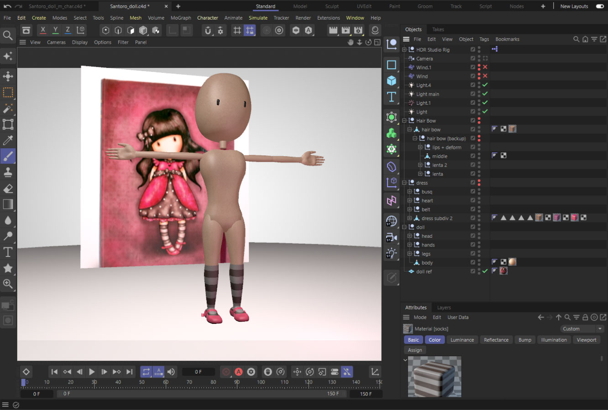
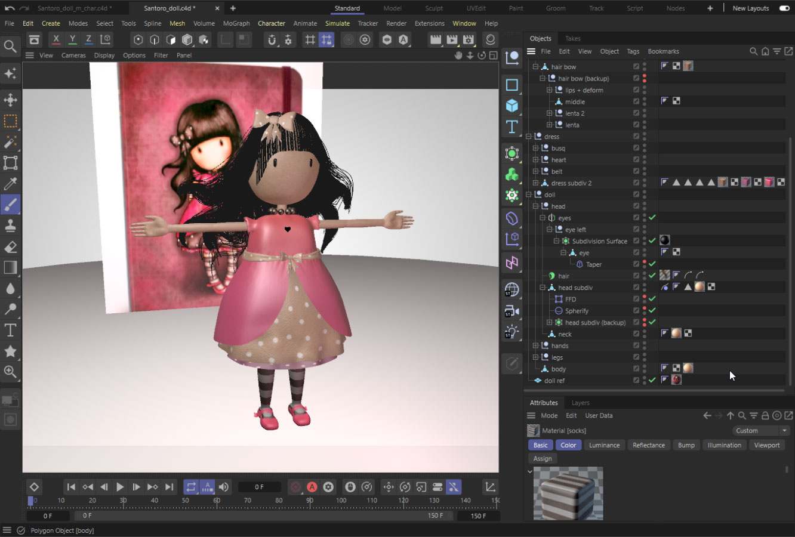
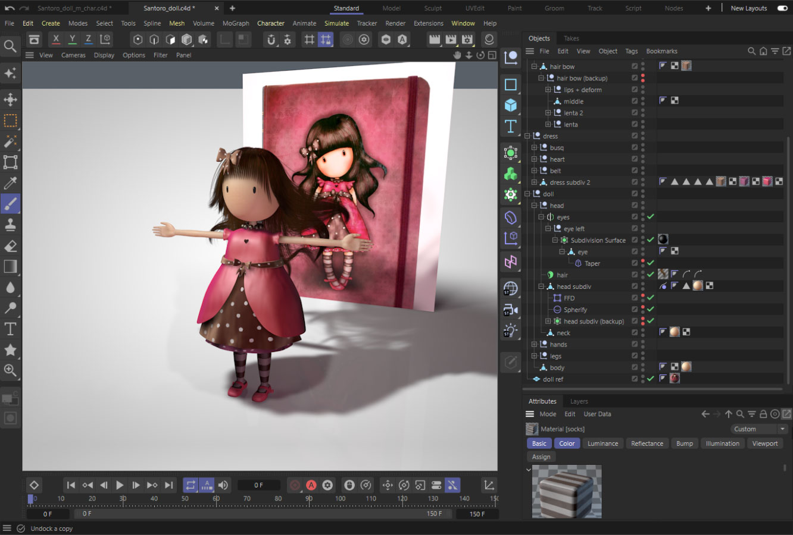
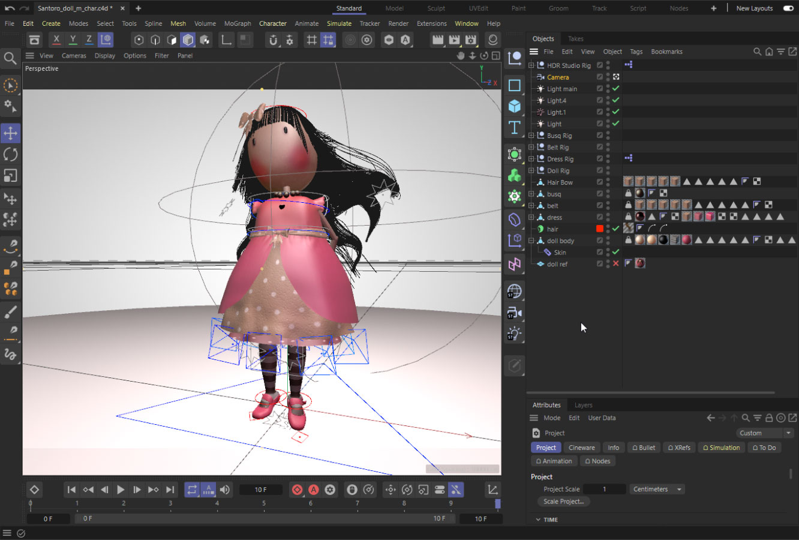
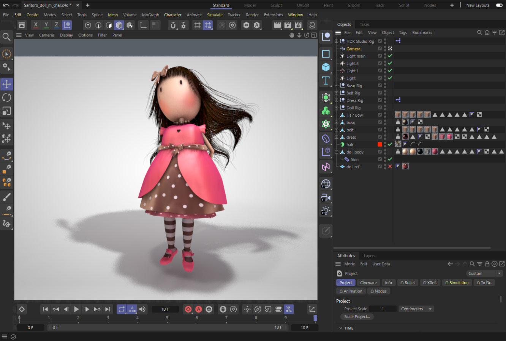
[There is a missing .c4d file, where I prepared the ground, the grass under the doll, simulated some smoke in the grass (to make it look like a fog) and made her hair look thicker.]
In the end I got the following render passes to work with in Photoshop:
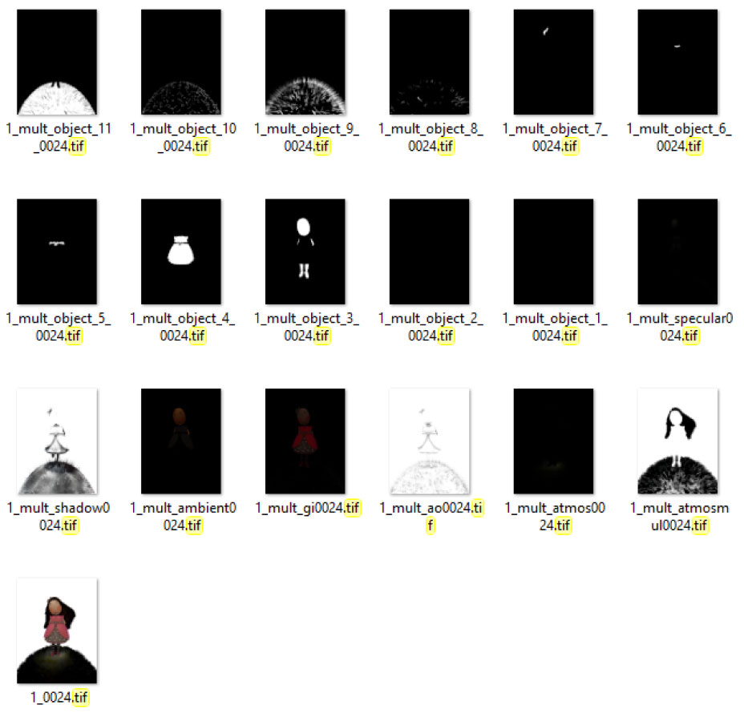
Assembling the passes in Photoshop
After mixing and playing a little with those passes, the layers in Photoshop looked something like this:
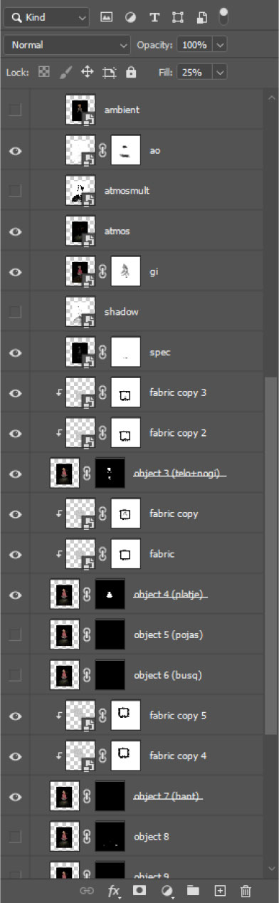
I even checked it right now and found out, that things could have looked even better, but that was then, so it’s fine.
As to the result at that time:
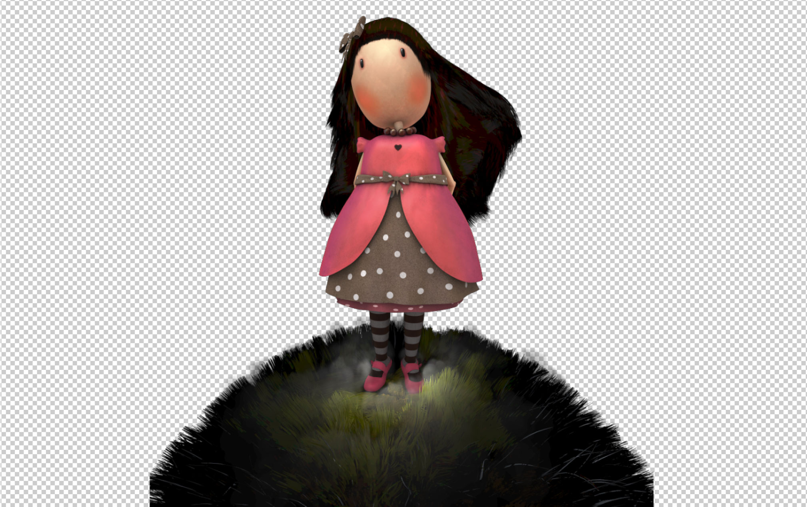
The background
It had to match the style of my Santoro doll reference, so I came up with this:
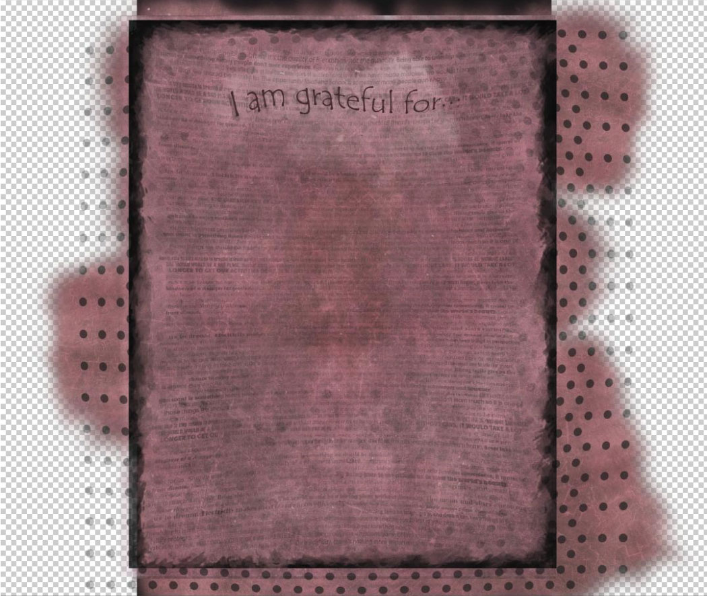
To spice this background with some soul, I filled it with different wise phrases, which you can actually read on the final printed version:
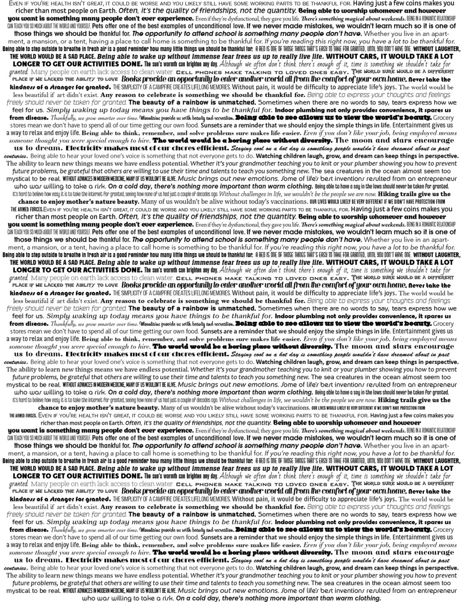
The result
My final result 8 years ago looked like this:
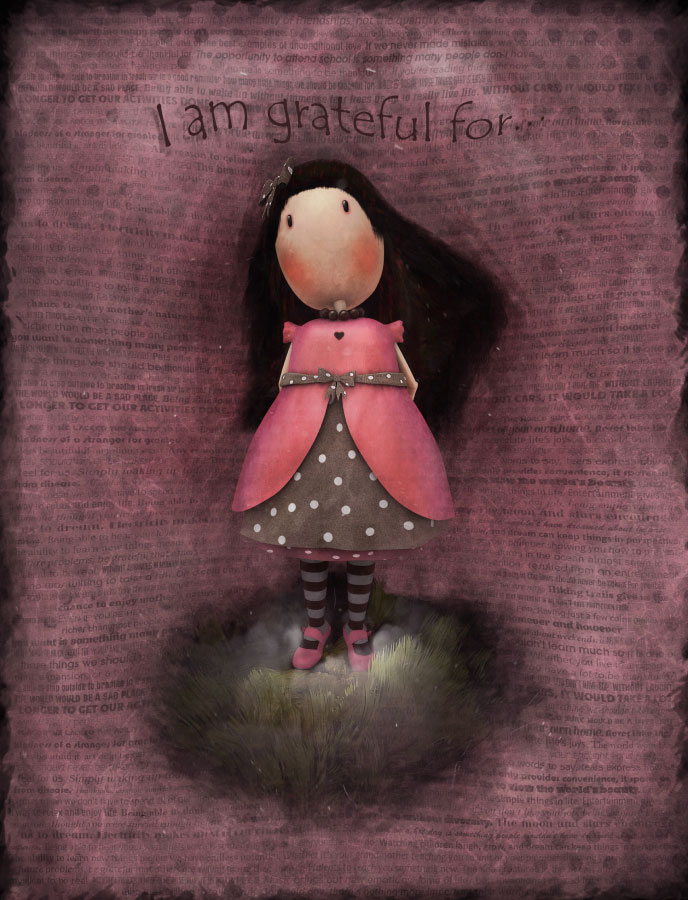
And when printed it supposed to look this way:
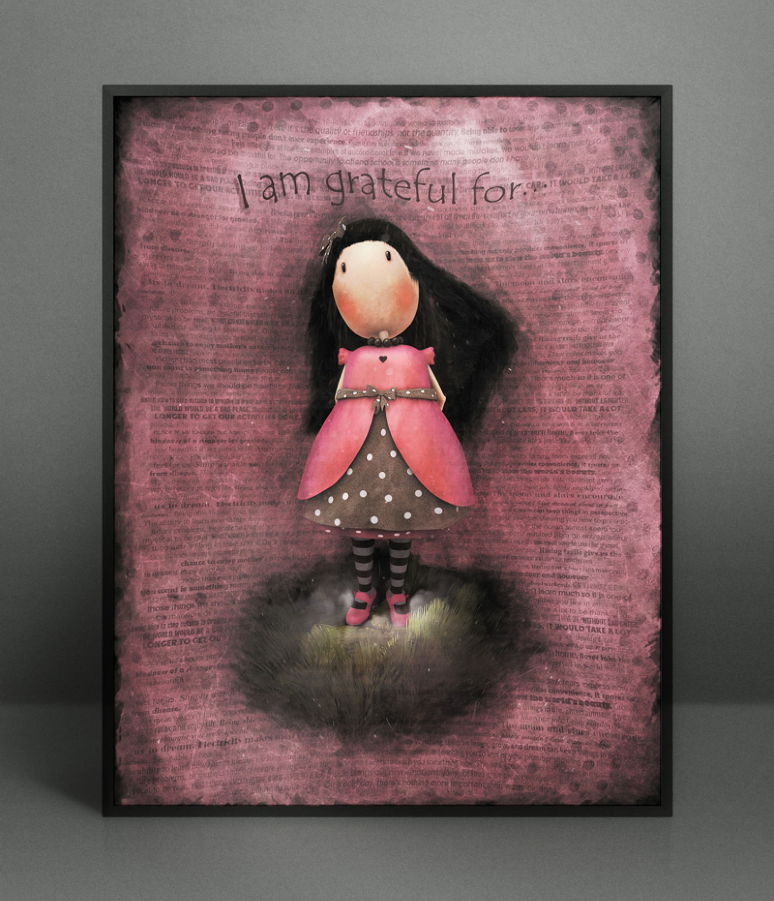
But in actuality it was a little darker overall, but that’s fine.